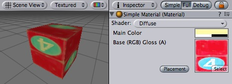
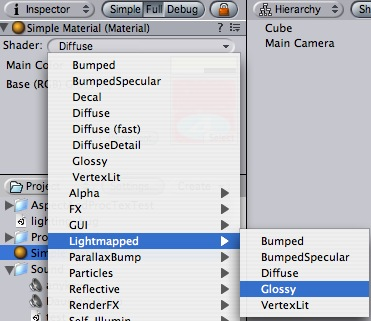
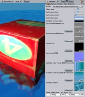
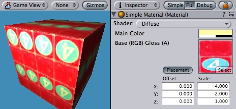

Previous
Previous
Materials are attached onto Game Objects with Mesh or Particle Renderers. They play an essential part in defining how your object is displayed.
|  |
Inspector for a simple material. It uses Diffuse shader which has only two properties - a color and a texture.
Properties
The properties of any Material will change depending on the selected Shader. These are the most often used properties.
| Property: | Function: |
|---|---|
| The shader that will be used by the material. | |
| Any kind of color tint can be applied. Use white for no tint. | |
| The Texture that will be displayed. |
Details
Materials are used to place Textures onto your Game Objects. You cannot add a Texture directly without a material. Therefore, you create a material, assign a shader, and choose the texture to display along with it. For more information on materials, take a look at the Manual's page about Materials and Shaders.
Choosing Shaders
After you create your material, the first thing you should decide is which Shader to use. You choose it from the drop-down Shader menu.
|  |
The Shader drop-down menu
You can choose any shader that exists in your project's assets folder or one of the builtin shaders. You can also create your own shaders. For more information on shaders, take a look at the Shaders documentation.
Setting shader properties
Depending on the type of shader selected, a number of different properties can appear in the inspector. Some of the shaders can have quite a lot of them, like the Water shader below.
|  |
The Reflective&Refractive Water shader has a lot of properties!
The different types of shader properties are:
- Color pickers
- Used to choose colors.
- Sliders
- Used to tweak a number value across the allowed range.
- Textures
- Used to select textures.
Texture placement
The placement of the textures can be altered by clicking Placement button near the texture property. It brings up texture offset and scale foldout.
|  |
A texture made to tile 4x2 times by using Scale entries in the Placement foldout
| Property: | Function: |
|---|---|
| Slides the texture around. | |
| Scales the texture along the different axes. |
Hints
- It is a good practice to share a single material across as many Game Objects as possible. This has great performance benefits.